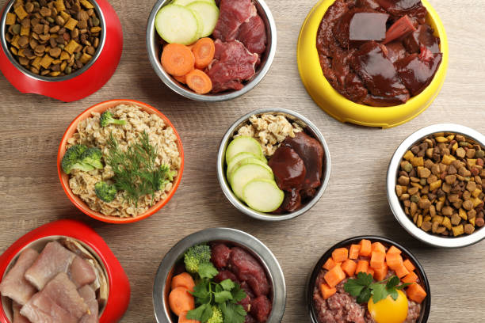

Introducción
Cada vez más dueños de mascotas se interesan por ofrecer a sus animales una dieta más saludable y natural. La alimentación es uno de los pilares fundamentales para mantener el bienestar general, prevenir enfermedades y mejorar la calidad de vida de perros y gatos. En un mundo donde los alimentos procesados dominan el mercado, volver a lo natural representa un cambio significativo que puede transformar la salud de nuestros compañeros.
La transición hacia una alimentación más consciente no solo beneficia a las mascotas, sino que también fortalece el vínculo entre el animal y su cuidador, al involucrarse más directamente en su nutrición y bienestar diario.
¿Qué es la Alimentación Natural?
La alimentación natural se basa en ofrecer alimentos frescos y menos procesados, evitando aditivos, colorantes y conservantes artificiales. Este enfoque nutricional busca replicar lo que los animales consumirían en su estado natural, proporcionando ingredientes de alta calidad y fácilmente reconocibles.
Tipos de Alimentación Natural
Existen diferentes enfoques dentro de la alimentación natural, cada uno con sus propias características y beneficios:
| Tipo de Dieta | Descripción | Mejor para |
|---|---|---|
| Dieta BARF | Alimentos crudos biológicamente apropiados con carnes, huesos y vegetales | Perros y gatos adultos sanos |
| Dieta Casera Cocida | Alimentos frescos preparados y cocidos en casa | Animales con estómagos sensibles |
| Dieta Mixta | Combinación de alimento natural con pienso de calidad | Transición gradual o dueños ocupados |
| Dieta Vegetariana | Basada en proteínas vegetales (solo bajo supervisión veterinaria) | Casos específicos con alergias severas |
La dieta BARF (Biologically Appropriate Raw Food) es una de las más populares y consiste en alimentos crudos diseñados para asemejarse a la dieta ancestral de los animales. Esta incluye carnes musculares, huesos carnosos, órganos, vegetales y frutas en proporciones específicas que varían según la especie y tamaño del animal.
Beneficios Principales de la Alimentación Natural
Implementar una dieta natural puede generar cambios notables en la salud y comportamiento de tu mascota. Los beneficios son múltiples y afectan diferentes aspectos de su bienestar:
1. Mejor Digestión y Absorción
Los ingredientes frescos y sin químicos mejoran significativamente la absorción de nutrientes. El sistema digestivo de perros y gatos está diseñado para procesar alimentos naturales, por lo que estos se asimilan con mayor eficiencia que los alimentos altamente procesados. Esto se traduce en heces más pequeñas, menos gases y mejor regulación intestinal.

2. Pelaje Brillante y Piel Sana
La dieta natural favorece notablemente la salud de la piel y el brillo del pelo. Los ácidos grasos omega-3 y omega-6 presentes en carnes frescas y aceites naturales contribuyen a un pelaje sedoso y reducen problemas dermatológicos como picazón, caspa y pérdida excesiva de pelo.
3. Más Energía y Vitalidad
Las mascotas alimentadas naturalmente suelen mostrarse más activas, alertas y felices. La energía sostenida que proporciona una dieta balanceada se refleja en mayor disposición para el juego, mejor ánimo y una actitud más positiva en general.
4. Sistema Inmunológico Fortalecido
Los nutrientes de alimentos frescos, especialmente vitaminas, minerales y antioxidantes, fortalecen las defensas naturales del organismo. Esto resulta en menor incidencia de enfermedades y recuperación más rápida cuando ocurren problemas de salud.
5. Control de Peso Natural
Sin carbohidratos innecesarios y rellenos artificiales, es más fácil mantener un peso saludable. La alimentación natural ayuda a prevenir la obesidad, uno de los principales problemas de salud en mascotas modernas.
| Beneficio | Resultado Visible | Tiempo Aproximado |
|---|---|---|
| Digestión mejorada | Heces más firmes y pequeñas, menos gases | 1-2 semanas |
| Pelaje brillante | Pelo más suave, menos caída, brillo natural | 4-6 semanas |
| Mayor energía | Más juguetón, alerta y activo | 2-3 semanas |
| Dientes limpios | Menos sarro, aliento más fresco | 3-4 semanas |
| Peso ideal | Pérdida o ganancia saludable de peso | 8-12 semanas |
Precauciones Importantes
Aunque los beneficios de la alimentación natural son significativos, es fundamental tomar ciertas precauciones para garantizar una transición segura y efectiva:
Consulta Veterinaria Obligatoria
Es fundamental consultar con un veterinario o nutricionista veterinario antes de cambiar la dieta. Un profesional puede evaluar las necesidades específicas de tu mascota según su edad, raza, nivel de actividad y estado de salud, garantizando que reciba todos los nutrientes esenciales y evitando deficiencias peligrosas.
Transición Gradual
Nunca cambies abruptamente la alimentación. La transición debe ser progresiva durante 7-10 días, mezclando gradualmente el nuevo alimento con el anterior para permitir que el sistema digestivo se adapte sin causar malestar estomacal.
Higiene y Seguridad Alimentaria
Al manejar alimentos crudos, mantén estrictas normas de higiene. Congela las carnes antes de usarlas para eliminar posibles parásitos, lava bien todos los utensilios y superficies, y almacena correctamente los alimentos para evitar contaminación bacteriana.
Equilibrio Nutricional
No basta con dar carne cruda. Una dieta natural completa requiere proporciones adecuadas de proteínas, grasas, carbohidratos, vitaminas y minerales. El calcio, por ejemplo, debe estar en equilibrio con el fósforo, algo que solo se logra con planificación cuidadosa.
Cómo Empezar con la Alimentación Natural
Iniciar este cambio puede parecer abrumador, pero siguiendo estos pasos será más sencillo:
- Investiga y edúcate: Lee libros especializados, consulta fuentes confiables y aprende sobre las necesidades nutricionales específicas de tu mascota.
- Consulta con expertos: Busca un veterinario con experiencia en nutrición natural o un nutricionista veterinario certificado.
- Planifica el menú: Crea un plan alimenticio balanceado que incluya variedad de proteínas, órganos, huesos y vegetales apropiados.
- Compra ingredientes de calidad: Selecciona carnes frescas de buena procedencia, preferiblemente orgánicas o de animales de pastoreo.
- Realiza la transición gradual: Introduce los nuevos alimentos lentamente, monitoreando la respuesta de tu mascota.
- Observa y ajusta: Presta atención a cambios en energía, heces, pelaje y comportamiento, ajustando las porciones según sea necesario.
Conclusión
Una alimentación natural bien planificada puede marcar una gran diferencia en la salud y longevidad de tu mascota. Los beneficios visibles en su energía, pelaje, digestión y vitalidad general hacen que el esfuerzo adicional valga completamente la pena.
Sin embargo, es crucial recordar que cada animal es único y requiere un enfoque personalizado. Lo que funciona maravillosamente para un perro puede no ser ideal para otro. La clave está en la educación continua, el seguimiento veterinario regular y la observación atenta de tu compañero.
En EcoPets CR, promovemos una nutrición consciente y adaptada a cada animal. Contamos con asesores especializados que pueden guiarte en este proceso de transformación alimentaria, asegurando que tu mascota reciba exactamente lo que necesita para prosperar. ¡Contáctanos para comenzar este viaje hacia una vida más saludable!
comment Comentarios
3Laura Méndez
14 de Octubre, 2025 - 3:45 PMHace seis meses empecé con la dieta BARF para mi labrador y la transformación ha sido increíble. Su pelaje brilla como nunca y tiene muchísima más energía. Al principio me daba miedo, pero con la guía de mi veterinaria todo fue muy sencillo. Totalmente recomendado.
Patricia Solís
13 de Octubre, 2025 - 11:20 AMMuy buen artículo. Una pregunta: ¿es posible hacer dieta natural para gatos? Tengo dos persas y me interesa mucho el tema, pero he escuchado que con gatos es más complicado por el tema del taurina y otros nutrientes específicos.
Roberto Vargas
12 de Octubre, 2025 - 8:15 AMLa tabla comparativa de los tipos de dieta es súper útil. Yo empecé con dieta mixta porque trabajo muchas horas y no siempre tengo tiempo para preparar todo. Poco a poco voy aumentando la proporción de alimento natural. Mi beagle está encantado con el cambio.